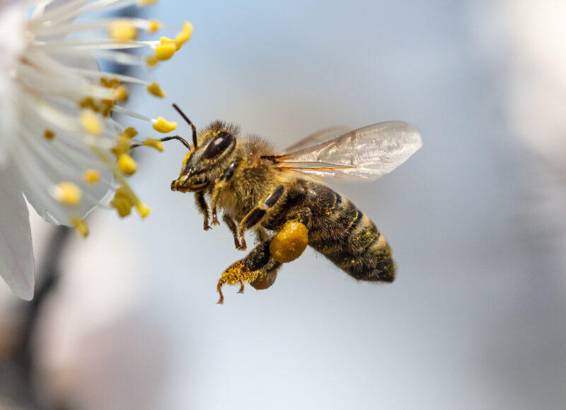

Protección del Suelo
Las prácticas sostenibles mejoran la salud del suelo, aumentando su capacidad para retener nutrientes.

Conservación de Polinizadores
La agricultura sostenible protege a los polinizadores esenciales para la producción de alimentos.

Agroforestería
Integrar árboles en cultivos mejora la biodiversidad y protege contra la erosión.